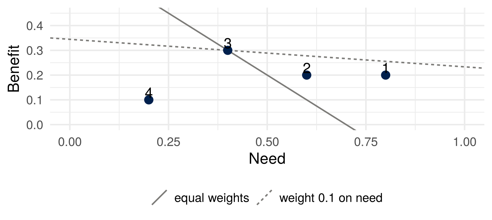

Part 1: Values
Part 2: A score is an order
Part 3: Utility, risk and probability
Part 4: Who is helped
Part 5: Distributive justice
You were asked to bring one case where something scarce went to some people and not others by a rule, a score or a queue, with what it ranked people on and who you think it ranked wrongly.
What did your rule rank people on? What did it leave out that someone else would have counted?
One thing can be both: health is wanted for itself and for what it lets a person do.
| Measured | Valued as a sign of |
|---|---|
| Health-care cost | Need |
| Reward \(R\) | Utility \(U\) |
| A benchmark score | Capability |
| Engagement | A user who finds the service worth their time |
When an instrumental value is pursued as if it were the end, it can come apart from what it was for (Goodhart).
Cost and need: Obermeyer, Powers, Vogeli and Mullainathan (2019), “Dissecting racial bias in an algorithm used to manage the health of populations,” Science 366(6464), 447–453, https://doi.org/10.1126/science.aax2342.
Accuracy, health, money, fairness, engagement, privacy, truth. Which are valued for themselves, and which for what they bring? Where do you and your neighbor disagree?
A correct choice can still leave regret: the last bed goes to the patient who will benefit most, and the patient who waited longest is turned away.
Incommensurable: no common unit. Incomparable: none of better, worse, equally good. The first does not imply the second.
Mason (2023), “Value Pluralism,” The Stanford Encyclopedia of Philosophy, substantive revision 4 June 2023, https://plato.stanford.edu/entries/value-pluralism/, the introduction and sections 2.2 and 4.
| Patient | Need | Benefit from the program |
|---|---|---|
| 1 | 0.8 | 0.2 |
| 2 | 0.6 | 0.2 |
| 3 | 0.4 | 0.3 |
| 4 | 0.2 | 0.1 |
Say one patient should come before another when they are at least as high on both. Which pairs can you order this way? Which can you not?

Dominance orders four of the six pairs. A score \(w \cdot \text{need} + (1 - w) \cdot \text{benefit}\) orders the other two, and \(w\) decides how: a point above the line through patient 3 ranks above patient 3. One unit of need is worth \(w / (1 - w)\) units of benefit.
Units of a good, for three people:
| Policy | Person 1 | Person 2 | Person 3 |
|---|---|---|---|
| P | 4 | 4 | 4 |
| M | 9 | 9 | 1 |
| T | 25 | 0 | 0 |
Which policy is best? What did you have to assume to say so?
| P | M | T | Picks | |
|---|---|---|---|---|
| Sum | 12 | 19 | 25 | T |
| Sum of square roots | 6 | 7 | 5 | M |
| Minimum | 4 | 1 | 0 | P |
No policy is at least as good as another for every person. Each rule is a value: total good, priority to the worse off, the position of the worst off.
\[ E_P\big[u(o(a, \omega))\big] = \sum_{\omega \in \Omega} P(\omega)\, u\big(o(a, \omega)\big) \]
Needs a sample space \(\Omega\), a probability measure \(P\), and a utility \(u\) whose differences mean something.
In von Neumann and Morgenstern’s theory the scale of \(u\) is built from choices among lotteries whose probabilities are given, and it is unique up to \(a u + c\), \(a > 0\). A ranking of sure outcomes gives only an order.
Briggs (2023), “Normative Theories of Rational Choice: Expected Utility,” The Stanford Encyclopedia of Philosophy, substantive revision 18 September 2023, https://plato.stanford.edu/entries/rationality-normative-utility/, section 2.2. Von Neumann and Morgenstern (1947), Theory of Games and Economic Behavior, 2nd ed., Princeton University Press.
What are the axioms a probability measure satisfies? Where does the measure come from in each case: a casino, a randomized trial, the veil of ignorance, the value of the far future?
Knight (1921), Risk, Uncertainty, and Profit, Houghton Mifflin, part III, chapter VIII, paragraph 1, https://www.econlib.org/library/Knight/knRUP.html. Ellsberg (1961), “Risk, Ambiguity, and the Savage Axioms,” The Quarterly Journal of Economics 75(4), 643–669, https://doi.org/10.2307/1884324, as Briggs (2023), section 3.2, presents it.
Choose a policy without knowing which person you will be.
The disagreement is over where the probabilities come from.
Freeman (2023), “Original Position,” The Stanford Encyclopedia of Philosophy, substantive revision 24 October 2023, https://plato.stanford.edu/entries/original-position/, section 6.2. Harsanyi (1975), “Can the Maximin Principle Serve as a Basis for Morality? A Critique of John Rawls’s Theory,” American Political Science Review 69(2), 594–606, https://doi.org/10.2307/1959090. Rawls (1971), A Theory of Justice, Harvard University Press.
Expected future beings: \(10^{24}\) (restricted estimate \(10^{14}\)). Cutting extinction risk by \(10^{-8}\) is worth \(10^{14} \times 10^{-8} = 10^6\) lives. $1 billion on AI safety, cutting existential risk by \(10^{-5}\): a trillion lives per $100.
What is \(\Omega\)? What grounds \(10^{-5}\)? The authors reply on cluelessness, imprecise probabilities and fanaticism; a Bayesian replies that declining to state a probability does not avoid a choice.
Every application of expected utility rests on a probability model, often under-specified, untested, and possibly unfalsifiable.
Greaves and MacAskill (2021), “The Case for Strong Longtermism,” GPI Working Paper No. 5-2021, Global Priorities Institute, University of Oxford, sections 3, 4.2, 4.3, 7 and 8, https://globalprioritiesinstitute.org/wp-content/uploads/The-Case-for-Strong-Longtermism-GPI-Working-Paper-June-2021-2-2.pdf.
A care program is tested in a randomized trial.
What share of patients did the program help? Could it have harmed anyone?
| Does well without | Does well with | World 1 | World 2 | |
|---|---|---|---|---|
| Helped | no | yes | 20% | 60% |
| Hurt | yes | no | 0% | 40% |
| Well either way | yes | yes | 40% | 0% |
| Badly either way | no | no | 40% | 0% |
Both worlds give 40% without and 60% with.
With \(p_0 = P(Y(0) = 1)\) and \(p_1 = P(Y(1) = 1)\):
\[ p_0 = P(\text{well either way}) + P(\text{hurt}), \qquad p_1 = P(\text{well either way}) + P(\text{helped}) \]
So \(P(\text{helped}) - P(\text{hurt}) = p_1 - p_0 = 0.2\) in every world, and
\[ 0.2 \le P(\text{helped}) \le 0.6, \qquad 0 \le P(\text{hurt}) \le 0.4 . \]
A larger trial pins down \(p_0\) and \(p_1\), and narrows nothing else.
Suppose harming a patient counts twice as much as failing to help one. Is giving the program to everyone good on balance?
Give each type a utility for being treated: \(u_h\) helped, \(u_d\) hurt, \(u_a\) well either way, \(u_n\) badly either way. Then
\[ W = u_h (p_1 - p_0) + u_a p_0 + u_n (1 - p_1) + P(\text{hurt}) \, (u_h + u_d - u_a - u_n). \]
The trial settles \(W\) only when the bracket is zero. Counting harm twice, \(W = 0.2 - P(\text{hurt})\): anywhere from \(-0.2\) to \(0.2\).
A “do no harm” utility is not identified from a trial.
Li and Pearl (2019), “Unit Selection Based on Counterfactual Logic,” Proceedings of the Twenty-Eighth International Joint Conference on Artificial Intelligence, 1793–1799, https://doi.org/10.24963/ijcai.2019/248. Ben-Michael, Imai and Jiang (2024), “Policy Learning with Asymmetric Counterfactual Utilities,” Journal of the American Statistical Association 119(548), 3045–3058, https://doi.org/10.1080/01621459.2023.2300507.
An observational study of the same population: half chose the program; 90% of those who took it did well, 20% of those who declined.
A hurt patient who took it did badly; a hurt patient who declined did well. So
\[ P(\text{hurt}) \le P(\text{took, did badly}) + P(\text{declined, did well}) = 0.05 + 0.10 = 0.15 . \]
Counting harm twice, \(W\) is now between \(0.05\) and \(0.2\): good on balance. This needs the two studies to describe the same people.
Tian and Pearl (2000), “Probabilities of Causation: Bounds and Identification,” Proceedings of the Sixteenth Conference on Uncertainty in Artificial Intelligence (UAI 2000), 589–598, https://arxiv.org/abs/1301.3898, equation (15); as used by Li and Pearl (2019).
A chatbot feature raises the share of users who finish a task from 40% to 60% in an A/B test. Some users may be worse off with it, and the test cannot say how many.
Lamont and Favor (2017), “Distributive Justice,” The Stanford Encyclopedia of Philosophy, sections 3 to 6, https://plato.stanford.edu/entries/justice-distributive/. Axelsen (2025), “Egalitarianism,” The Stanford Encyclopedia of Philosophy, sections 6.1 and 6.2, https://plato.stanford.edu/entries/egalitarianism/. Sen (2000), “Merit and Justice,” in Arrow, Bowles and Durlauf (eds), Meritocracy and Economic Inequality, Princeton University Press, 5–16.
Please take a few minutes now to fill in the course survey.
A clinic can offer the program to 100 of its 200 patients. Write down a rule for choosing them, the value or values it serves, and one person who could object to it, and why.
Who benefited from that choice being invisible? And would a more competent analyst have chosen differently?